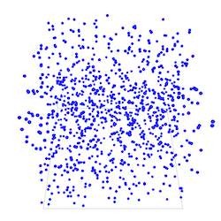

1. Basic Model
In this first step, we will see how to define a 3D environment and populate it.
Formulation
Initialize a 3D world with a population of cells placed randomly in a 3D 100x100x100 cube.
- Definition of the
cellspecies. - Definition of the
nb_cellsparameter. - Creation of
nb_cellscell agents randomly located in the 3D environment, that is defined as a cub of dimensions: 100x100x100.

Model Definition
In this model, we define one species of agent: the cell species. The agents will be just displayed as a blue sphere of radius 1.
species cell {
aspect default {
draw sphere(1) color: #blue;
}
}
Global Section
Global variables
Definition of a global variable nb_cells of type int representing the number of cell agents.
global {
int nb_cells <- 100;
}
Model initialization
Definition of the init block in order to create nb_cells cell agents. By default, an agent is created with a random location in x and y, and a z value equal to 0. In our case, we want to place the cell agents randomly in the 3D environment so we set a random value for x, y and z.
create cell number: nb_cells {
location <- {rnd(100), rnd(100), rnd(100)};
}
Experiment
In our model, we define a basic gui experiment called Tuto3D :
experiment Tuto3D type: gui {
}
Input
Definition of a parameter from the global variable nb_cells :
experiment Tuto3D type: gui {
parameter "Initial number of cells: " var: nb_cells min: 1 max: 1000 category: "Cells";
}
Output
In our model, we define a display to draw the cell agents in a 3D environment.
output {
display View1 type:opengl {
species cell;
}
}
Complete Model
This model is available in the model library (under Tutorials > 3D) and the GIT version of the model can be found here Model 01.gaml
model Tuto3D
global {
int nb_cells <- 100;
init {
create cell number: nb_cells {
location <- {rnd(100), rnd(100), rnd(100)};
}
}
}
species cell {
aspect default {
draw sphere(1) color: #blue;
}
}
experiment Tuto3D type: gui {
parameter "Initial number of cells: " var: nb_cells min: 1 max: 1000 category: "Cells" ;
output {
display View1 type: opengl {
species cell;
}
}
}